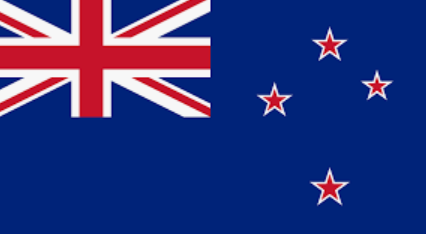

About Me
Hi, I'm Nic Tomu. I was born in New Zealand but grew up in Tonga until I was five. Now, I'm happily married with four amazing kids. Family is my world. I enjoy volleyball, but nothing beats spending time with my family, especially my wife. Whether it's a drive down the road, game night, or a quiet evening at home, those moments are precious. I'm also into software development, taking a course that's been an incredible journey. I've learned so much about coding and problem-solving, gaining confidence along the way. Each new concept is a step toward a future filled with opportunities.
New Zealand
New Zealand is a beautiful country located in the southwestern Pacific Ocean, known for its breathtaking landscapes and rich Maori culture. It offers a wide range of outdoor activities, from hiking to water sports.
